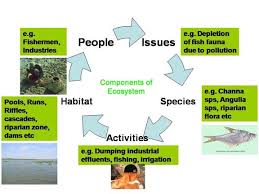

Environmental consequences of global warming
Global warming and climate change have the potential to alter biological systems. More specifically, changes to near-surface air temperatures will likely influence ecosystem functioning and thus the biodiversity of plants, animals, and other forms of life.
Climate Research

Modern research into climatic variation and change is based on a variety of empirical and theoretical lines of inquiry. One line of inquiry is the analysis of data that record changes in atmosphere, oceans, and climate from roughly 1850 to the present. In a second line of inquiry, information describing paleoclimatic changes is gathered from “proxy,” or indirect, sources such as ocean and lake sediments, pollen grains, corals, ice cores, and tree rings. Finally, a variety of theoretical models can be used to investigate the behaviour of Earth’s climate under different conditions. These three lines of investigation are described in this section.